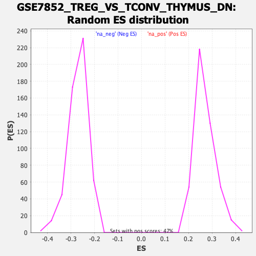

Profile of the Running ES Score & Positions of GeneSet Members on the Rank Ordered List
| Dataset | qlf.KOd4vsWTd4_gsea_score |
| Phenotype | NoPhenotypeAvailable |
| Upregulated in class | na_neg |
| GeneSet | GSE7852_TREG_VS_TCONV_THYMUS_DN |
| Enrichment Score (ES) | -0.65147996 |
| Normalized Enrichment Score (NES) | -2.416281 |
| Nominal p-value | 0.0 |
| FDR q-value | 0.0 |
| FWER p-Value | 0.0 |
| SYMBOL | RANK IN GENE LIST | RANK METRIC SCORE | RUNNING ES | CORE ENRICHMENT | |
|---|---|---|---|---|---|
| 1 | RREB1 | 241 | 3.693 | -0.0056 | No |
| 2 | CDYL2 | 552 | 2.750 | -0.0223 | No |
| 3 | PTPN6 | 1261 | 1.665 | -0.0826 | No |
| 4 | ZNRF3 | 1492 | 1.459 | -0.0978 | No |
| 5 | GGT1 | 1633 | 1.348 | -0.1049 | No |
| 6 | TET1 | 2004 | 1.077 | -0.1354 | No |
| 7 | SAYSD1 | 2145 | 0.987 | -0.1442 | No |
| 8 | SLC29A3 | 2150 | 0.985 | -0.1399 | No |
| 9 | LYPD6B | 2531 | 0.786 | -0.1727 | No |
| 10 | DUSP6 | 2831 | 0.658 | -0.1984 | No |
| 11 | THEMIS | 3059 | 0.577 | -0.2176 | No |
| 12 | SLC9A6 | 3161 | 0.538 | -0.2247 | No |
| 13 | ALG1 | 3264 | 0.504 | -0.2322 | No |
| 14 | MAN1A2 | 3431 | 0.453 | -0.2460 | No |
| 15 | VOPP1 | 3689 | 0.372 | -0.2690 | No |
| 16 | ENC1 | 3702 | 0.370 | -0.2684 | No |
| 17 | P2RX4 | 3788 | 0.346 | -0.2749 | No |
| 18 | PPP1R13B | 3861 | 0.327 | -0.2803 | No |
| 19 | HINFP | 3898 | 0.317 | -0.2823 | No |
| 20 | CDC37L1 | 3993 | 0.290 | -0.2899 | No |
| 21 | PCCB | 4063 | 0.271 | -0.2953 | No |
| 22 | MAP3K7 | 4369 | 0.203 | -0.3237 | No |
| 23 | ATP8A1 | 4576 | 0.148 | -0.3429 | No |
| 24 | CCDC71L | 4593 | 0.145 | -0.3437 | No |
| 25 | TANC1 | 4600 | 0.144 | -0.3436 | No |
| 26 | PFKFB2 | 4694 | 0.126 | -0.3520 | No |
| 27 | ANKRD23 | 4765 | 0.112 | -0.3582 | No |
| 28 | COMMD9 | 4879 | 0.092 | -0.3687 | No |
| 29 | FAM120AOS | 4981 | 0.073 | -0.3781 | No |
| 30 | PIP4K2A | 5167 | 0.041 | -0.3957 | No |
| 31 | TMEM170B | 5187 | 0.038 | -0.3974 | No |
| 32 | OVGP1 | 5280 | 0.023 | -0.4061 | No |
| 33 | SLC39A14 | 5305 | 0.018 | -0.4083 | No |
| 34 | OTUD1 | 5320 | 0.016 | -0.4096 | No |
| 35 | RAP2C | 5394 | 0.001 | -0.4167 | No |
| 36 | AAK1 | 5457 | -0.009 | -0.4226 | No |
| 37 | CNOT3 | 5627 | -0.036 | -0.4387 | No |
| 38 | SLCO3A1 | 5756 | -0.058 | -0.4508 | No |
| 39 | ITGB3 | 5874 | -0.075 | -0.4617 | No |
| 40 | TMEM86A | 5937 | -0.086 | -0.4673 | No |
| 41 | FNTB | 5961 | -0.090 | -0.4691 | No |
| 42 | SLC20A1 | 5993 | -0.096 | -0.4716 | No |
| 43 | KCNMB4 | 6041 | -0.104 | -0.4756 | No |
| 44 | CTBP1 | 6152 | -0.124 | -0.4856 | No |
| 45 | REV3L | 6155 | -0.125 | -0.4852 | No |
| 46 | DYRK2 | 6249 | -0.145 | -0.4935 | No |
| 47 | AP4E1 | 6271 | -0.148 | -0.4948 | No |
| 48 | RAPGEF4 | 6424 | -0.184 | -0.5086 | No |
| 49 | SRR | 6611 | -0.227 | -0.5255 | No |
| 50 | MTUS2 | 6642 | -0.234 | -0.5272 | No |
| 51 | SLC38A9 | 6733 | -0.257 | -0.5347 | No |
| 52 | WIPF2 | 6812 | -0.278 | -0.5409 | No |
| 53 | EIF2AK3 | 6815 | -0.279 | -0.5397 | No |
| 54 | APBB3 | 7038 | -0.338 | -0.5595 | No |
| 55 | XKRX | 7116 | -0.363 | -0.5652 | No |
| 56 | KREMEN1 | 7151 | -0.372 | -0.5667 | No |
| 57 | KBTBD7 | 7296 | -0.416 | -0.5786 | No |
| 58 | SOS1 | 7373 | -0.443 | -0.5838 | No |
| 59 | MFSD8 | 7421 | -0.459 | -0.5862 | No |
| 60 | RHOT2 | 7444 | -0.466 | -0.5860 | No |
| 61 | UBE2D1 | 7474 | -0.481 | -0.5865 | No |
| 62 | USP40 | 7748 | -0.591 | -0.6100 | No |
| 63 | ADGRL1 | 7836 | -0.626 | -0.6154 | No |
| 64 | DMTF1 | 7841 | -0.627 | -0.6128 | No |
| 65 | PGLYRP2 | 8047 | -0.713 | -0.6292 | No |
| 66 | TMEM241 | 8170 | -0.772 | -0.6373 | No |
| 67 | ATP6V0A2 | 8175 | -0.773 | -0.6339 | No |
| 68 | GPR18 | 8187 | -0.781 | -0.6313 | No |
| 69 | ADCY7 | 8208 | -0.794 | -0.6294 | No |
| 70 | APPL2 | 8223 | -0.802 | -0.6269 | No |
| 71 | RPH3AL | 8274 | -0.829 | -0.6278 | No |
| 72 | ANKRD13D | 8351 | -0.869 | -0.6309 | No |
| 73 | ZZEF1 | 8423 | -0.927 | -0.6334 | No |
| 74 | CHD7 | 8612 | -1.036 | -0.6465 | Yes |
| 75 | MLLT11 | 8625 | -1.045 | -0.6427 | Yes |
| 76 | SHC1 | 8649 | -1.058 | -0.6398 | Yes |
| 77 | ARHGAP29 | 8657 | -1.063 | -0.6354 | Yes |
| 78 | ANKRD11 | 8677 | -1.074 | -0.6321 | Yes |
| 79 | TOLLIP | 8750 | -1.117 | -0.6337 | Yes |
| 80 | CCDC30 | 8825 | -1.176 | -0.6352 | Yes |
| 81 | RAB3D | 8856 | -1.206 | -0.6324 | Yes |
| 82 | HERC3 | 8918 | -1.244 | -0.6323 | Yes |
| 83 | SIKE1 | 8997 | -1.318 | -0.6335 | Yes |
| 84 | ARL4C | 9037 | -1.341 | -0.6309 | Yes |
| 85 | ACAP1 | 9040 | -1.344 | -0.6246 | Yes |
| 86 | TAPT1 | 9076 | -1.386 | -0.6214 | Yes |
| 87 | RABGGTA | 9122 | -1.433 | -0.6189 | Yes |
| 88 | GUCD1 | 9150 | -1.458 | -0.6145 | Yes |
| 89 | INPP5B | 9163 | -1.471 | -0.6086 | Yes |
| 90 | ALS2CL | 9186 | -1.510 | -0.6035 | Yes |
| 91 | NAP1L4 | 9233 | -1.557 | -0.6005 | Yes |
| 92 | WDR81 | 9278 | -1.595 | -0.5971 | Yes |
| 93 | GPRC5B | 9285 | -1.604 | -0.5900 | Yes |
| 94 | ZFYVE28 | 9308 | -1.629 | -0.5843 | Yes |
| 95 | LYST | 9329 | -1.649 | -0.5784 | Yes |
| 96 | CLIP1 | 9394 | -1.725 | -0.5763 | Yes |
| 97 | UQCC3 | 9411 | -1.740 | -0.5695 | Yes |
| 98 | ACVR1B | 9432 | -1.776 | -0.5630 | Yes |
| 99 | NFE2L2 | 9486 | -1.852 | -0.5592 | Yes |
| 100 | SUSD6 | 9505 | -1.880 | -0.5520 | Yes |
| 101 | SCML4 | 9509 | -1.891 | -0.5432 | Yes |
| 102 | PIK3IP1 | 9532 | -1.918 | -0.5361 | Yes |
| 103 | TNFRSF1A | 9604 | -2.049 | -0.5332 | Yes |
| 104 | TDRP | 9631 | -2.089 | -0.5257 | Yes |
| 105 | HPS3 | 9655 | -2.129 | -0.5177 | Yes |
| 106 | ADRB2 | 9657 | -2.133 | -0.5076 | Yes |
| 107 | NSG2 | 9699 | -2.219 | -0.5010 | Yes |
| 108 | PDLIM4 | 9766 | -2.355 | -0.4961 | Yes |
| 109 | NPC2 | 9786 | -2.396 | -0.4864 | Yes |
| 110 | SGMS1 | 9801 | -2.435 | -0.4762 | Yes |
| 111 | TMEM167B | 9847 | -2.516 | -0.4685 | Yes |
| 112 | FAM98C | 9853 | -2.528 | -0.4568 | Yes |
| 113 | NSF | 9870 | -2.557 | -0.4462 | Yes |
| 114 | MYLIP | 9881 | -2.571 | -0.4348 | Yes |
| 115 | VAMP1 | 9885 | -2.585 | -0.4228 | Yes |
| 116 | CNGA1 | 9919 | -2.672 | -0.4132 | Yes |
| 117 | DAXX | 9947 | -2.768 | -0.4025 | Yes |
| 118 | SPTBN1 | 9971 | -2.844 | -0.3911 | Yes |
| 119 | EGR1 | 10012 | -2.936 | -0.3809 | Yes |
| 120 | SETD4 | 10024 | -2.959 | -0.3679 | Yes |
| 121 | AP3D1 | 10038 | -3.021 | -0.3547 | Yes |
| 122 | GRK6 | 10039 | -3.026 | -0.3402 | Yes |
| 123 | IL1RL2 | 10082 | -3.190 | -0.3290 | Yes |
| 124 | CYP2S1 | 10110 | -3.290 | -0.3158 | Yes |
| 125 | CTDSP2 | 10128 | -3.379 | -0.3013 | Yes |
| 126 | RNF167 | 10176 | -3.547 | -0.2889 | Yes |
| 127 | FAM78A | 10187 | -3.627 | -0.2725 | Yes |
| 128 | VIPR1 | 10189 | -3.628 | -0.2553 | Yes |
| 129 | RCBTB2 | 10238 | -3.907 | -0.2412 | Yes |
| 130 | ZFP36 | 10300 | -4.298 | -0.2265 | Yes |
| 131 | FAM102A | 10309 | -4.382 | -0.2063 | Yes |
| 132 | SLC12A7 | 10319 | -4.441 | -0.1860 | Yes |
| 133 | SGK1 | 10359 | -4.746 | -0.1670 | Yes |
| 134 | SATB1 | 10434 | -5.598 | -0.1474 | Yes |
| 135 | SLC16A5 | 10436 | -5.613 | -0.1206 | Yes |
| 136 | TMEM63A | 10445 | -5.761 | -0.0938 | Yes |
| 137 | TIMP2 | 10453 | -5.962 | -0.0660 | Yes |
| 138 | CPM | 10490 | -7.329 | -0.0344 | Yes |
| 139 | DENND2D | 10494 | -7.538 | 0.0013 | Yes |
